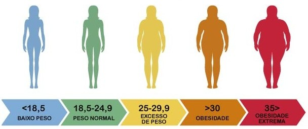

O que é o IMC e como ele funciona?
O Índice de Massa Corporal (IMC) é uma ferramenta amplamente utilizada para avaliar a relação entre o peso e a altura de uma pessoa. Ele foi criado como uma maneira simples e prática de identificar se uma pessoa está em um peso considerado saudável, sendo útil tanto para profissionais de saúde quanto para a população em geral. Ele é calculado pela fórmula:
IMC = Peso (kg) ÷ Altura (m)²
Faça o seu teste agora!
Descubra agora como está a sua saúde! Preencha os campos abaixo com seu peso e altura para calcular o seu Índice de Massa Corporal (IMC). É rápido, fácil e pode ser o primeiro passo para entender melhor o seu corpo e cuidar do seu bem-estar. Vamos lá?
